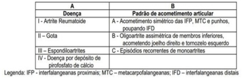
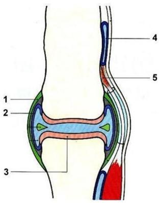

Questão 1 · Avaliação dos pacientes com monoartrite · 4000129455Paciente de 58 anos consultou por dor intensa no joelho esquerdo há 2 dias e tosse produtiva e febre há 4 dias, com piora progressiva. Referiu ser tabagista e portador de hipertensão arterial sistêmica em tratamento com hidroclorotiazida. Ao exame físico, encontrava-se em regular estado geral, com pressão arterial de 150/90 mmHg, frequência cardíaca de 110 bpm, frequência respiratória de 24 mpm, SpO2 de 90% e murmúrio vesicular reduzido com crepitantes no terço médio à direita. O IMC era de 33 kg/m². No joelho esquerdo, havia eritema, edema, calor e dor ao leve toque e à mobilização passiva. A conduta mais adequada solicitar
A contagem de leucócitos, pesquisa de cristais e cultura do líquido sinovial e iniciar antibiótico.
B dosagem de ácido úrico e prescrever alopurinol e anti-inflamatório não esteroidal.
C dosagem de velocidade de hemossedimentação e pesquisa de HLA-B27 e iniciar prednisona (15 mg/dia).
D radiografia de joelhos e de coluna lombossacra e infiltrar joelho esquerdo com metilprednisolona.
Questão 2 · Avaliação dos pacientes com monoartrite · Artrite séptica · Tratamento · 4000119421Paciente masculino, 68 anos, procura o pronto-socorro com dor e aumento de volume de joelho esquerdo há 3 dias, com piora progressiva, que impede a deambulação, associado a astenia, anorexia e febre (39ºC). Há 5 anos, recebeu diagnóstico de gota por apresentar podagra a esquerda e hiperuricemia, iniciando tratamento com alopurinol. Há 2 anos, apresentou artrite aguda em joelho esquerdo que melhorou com o uso de colchicina 0,5mg 4 vezes ao dia. Na ocasião, foram observados cristais de urato de monossódio no líquido sinovial. Qual a conduta para esse paciente no pronto socorro?
A Punção articular e oxacilina 8g/dia.
B Colchicina e corticoide.
C Punção articular, ceftazima 3 g/dia.
D Punção articular, colchicina, oxacilina 8g/dia e corticoide.
Questão 3 · Avaliação dos pacientes com monoartrite · Artrite séptica · Tratamento · 4000107631Homem, 47 anos, queixa-se de dor intensa e edema em tornozelo esquerdo, com di culdade de mobilização articular, há três dias. Nunca apresentou quadro similar e nega traumatismo local. É tabagista, etilista, dislipidêmico, hipertenso e diabético. O exame físico revela artrite em tornozelo esquerdo com derrame articular. Foi realizada punção do líquido sinovial e o resultado foi: celularidade de 85 000 células, com 88% de polimorfonucleares. Culturas e pesquisa de cristais em andamento. A(s) conduta(s) adequada(s) é(são)
A prescrever anti-inflamatório não hormonal e alopurinol.
B iniciar prednisona associada ao alopurinol.
C solicitar radiografia do tornozelo e aguardar cultura e pesquisa de cristais.
D iniciar antibioticoterapia empírica.
E solicitar ultrassonografia do tornozelo para pesquisa de rotura de ligamentos.
Questão 4 · Avaliação dos pacientes com monoartrite · Artrite séptica · Tratamento · 4000086256Mulher, 42 anos, transplantada renal há 8 meses, chegou à emergência referindo Tax 37,5ºC e dor no joelho esquerdo. Há 5 dias teve um pequeno acidente doméstico: caiu no chão batendo o joelho esquerdo. Ao exame físico, encontrava-se em regular estado geral, confusa, PA 90/60 mmHg, FC 110 bpm, hipocorada, hidratada, eupneica e anictérica. O joelho esquerdo apresentava nítidos sinais ogísticos e dor intensa ao movimento. Entre outros procedimentos, a equipe de emergência solicitou coleta de exames culturais (sangue e urina), artrocentese diagnóstica e início imediato de antibiótico empírico. Em relação ao caso, afirma-se: I. A presença de 50.000 polimorfonucleares/mm³ no líquido sinovial sugere o diagnóstico de artrite séptica. II. Início imediato de antibioticoterapia e drenagem do líquido sinovial são essenciais no manejo do quadro. III. A presença de proteínas e lactato elevada no líquido sinovial são critérios maiores no diagnóstico de artrite séptica bacteriana. Estão corretas as afirmativas
A I e II, apenas.
B I e III, apenas.
C II e III, apenas.
D I, II e III.
Questão 5 · Bases imunológicas da Reumatologia · Autoanticorpos · 4000045913Assinale a alternativa que correlaciona corretamente os anticorpos encontrados em doenças reumáticas autoimunes sistêmicas.
A Síndrome Antifosfolípideo secundária a LES: VDRL, Anti-Jo1, Anticardiolipina IgG e IgM, Anticoagulante lúpico e Anti-beta2 glicoproteína.
B Esclerose Sistêmica: Anti-Scl 70; Anti-TPO e p-ANCA.
C Artrite Reumatoide: Antipeptídeo citrulinado cíclico, FAN, Anticentrômero e Fator Reumatoide.
D Lúpus Eritematoso Sistêmico: Anti nucleossomo, FAN, Anti-DNA (ds e Anti-Sm.
Questão 6 · Fatores antinucleares FAN · 4000041777Jovem de 25 anos, sexo feminino, em avaliação devido à astenia, apresentou a pesquisa de autoanticorpos (FAN) positiva, com padrão nuclear pontilhado fino denso em título 1:80. A conduta do médico assistente deve ser:
A informar que a paciente tem lúpus eritematoso sistêmico.
B solicitar anti-DNA dupla hélice.
C solicitar anti-Sm.
D informar que o resultado não indica a presença de doença autoimune.
E solicitar avaliação de um reumatologista.
Questão 7 · Avaliação dos pacientes com monoartrite · Artrite séptica · Líquido Sinovial · 4000031790A.F.L.K, 63 anos, masculino, sem comorbidades prévias, iniciou com dor intensa em joelho direito, associado a eritema e importante edema. Admitido ao pronto atendimento febril (38,5º C), PA 110x60, FC 112, ritmo cardíaco regular em 2 tempos e sem sopros, sem outras alterações ao exame físico. O diagnóstico mais importante a ser avaliado por suas implicações prognósticas e a propedêutica mais indicada são?
A Gota e dosagem de uricemia.
B Doença do depósito de pirofosfato de cálcio e radiografia de joelho direito.
C Artrite Reativa e Reação de cadeia de polimerase para clamídia.
D Artrite séptica e artrocentese com análise do líquido sinovial e culturas.
Questão 8 · Avaliação dos pacientes com monoartrite · Líquido Sinovial · 4000026071Nos processos articulares inflamatórios, as possibilidades diagnósticas são definidas de acordo com o número de articulações envolvidas. Em um paciente com monoartrite aguda, a artrocentese contribui para auxílio na investigação diagnóstica e, na suspeita de uma causa inflamatória, o líquido sinovial apresenta como características:
A claridade transparente e cor vermelha.
B viscosidade baixa e contagem de neutrófilos maior que 50%.
C contagem de leucócitos menor que 200 células/mm³ e claridade opaca.
D cor amarela e viscosidade alta.
Questão 9 · Avaliação dos pacientes com monoartrite · Líquido Sinovial · 4000025902Homem de 48 anos apresenta dor, de intensidade 7/10, aumento de volume e limitação aos movimentos do joelho esquerdo, de início há uma semana. Nega episódios semelhantes anteriormente. Nega trauma local. Foi submetido a uma punção articular e a análise do líquido sinovial revelou: volume = 20 ml; cor = amarelo; viscosidade = baixa; leucócitos = 5.000/mm³; polimorfonucleares = 55%; cultura = negativa. De acordo com as características descritas, o líquido sinovial deste paciente pode ser classificado como:
A normal.
B não inflamatório.
C inflamatório.
D séptico.
Questão 10 · Avaliação dos pacientes com monoartrite · 4000004590Paciente masculino, 47 anos, é admitido no Pronto Atendimento com quadro de monoartrite aguda em joelho direito. Ao exame, apresenta hiperemia, dor intensa limitando a mobilização ativa e passiva e moderado derrame articular. Nega trauma local prévio. A melhor conduta inicial, frente ao caso é:
A Realizar artrocentese de alívio no joelho direito e infiltrar corticosteróide.
B Encaminhar para o ortopedista para abordagem cirúrgica, imediatamente.
C Colher ácido úrico sérico e urinário, prescrever AINE, colchicina e compressa de gelo local.
D Puncionar o joelho para realização de citologia, pesquisa de cristais e cultura do líquido sinovial.
E Iniciar antibioticoterapia para artrite séptica
Questão 11 · Exames complementares · Avaliação dos pacientes com monoartrite · Diagnóstico · 4000112932Homem de 22 anos apresenta quadro de dor, edema e calor em joelho esquerdo há 2 dias. A punção evidenciou um líquido turvo com 100.000 células/ml, sendo 87% de neutrófilos, sem presença de cristais. A hipótese diagnóstica mais provável é:
A Artrite gonocócica.
B Artrite gotosa.
C Artrite reumatoide.
D Osteoartrose aguda.
E Cisto de Baker roto.
Questão 12 · Reumatologia · Introdução à Reumatologia · Diagnóstico dif erencial das artropatias · 4000083995Homem, 34 anos, chega à consulta com a médica da unidade de saúde e reclama de dores nos cotovelos ao iniciar atividade física, mas que melhoram conforme o "sangue esquenta", ou prossegue na atividade. Que tipo de diagnóstico sindrômico tem essa característica?
A Artrite.
B Miosite.
C Periartrite.
D Osteoartrite.
Questão 13 · Bases imunológicas da Reumatologia · Fatores antinucleares FAN · Autoanticorpos · 4000060642O teste laboratorial Fator Antinuclear (FAN) é utilizado para a investigação de doenças autoimunes. Assinale a alternativa que apresenta, corretamente, o quadro clínico que justifica a solicitação do FAN.
A Mulher, 15 anos de idade, com dor em face anterior de joelhos. Ao exame físico, apresenta crepitação articular em joelhos, sem outras alterações.
B Mulher, 20 anos de idade, cuja mãe morreu em decorrência de lúpus eritematoso sistêmico. Sem queixas e exame físico normal.
C Mulher, 35 anos de idade, com queixa de dor generalizada, distúrbio do sono e fadiga. Exame físico sem alterações.
D Mulher, 45 anos de idade, com dor em 1º carpometacarpiano da mão direita. Ao exame físico, nota-se crepitação ao realizar a rotação passiva do primeiro dedo.
E Mulher, 60 anos de idade, com queixa de dor generalizada, xerostomia e xeroftalmia. Exame físico sem alterações.
Questão 14 · Reumatologia · Avaliação dos pacientes com monoartrite · Exames em Reumatologia · 4000056865Homem de 35 anos procura pronto atendimento devido a febre (39° C) há 2 dias, além de dor, calor e rubor em joelho direito, com limitação funcional para exão e extensão. Nega história de trauma ou episódios prévios. Consome bebida alcoólica pelo menos 5 vezes por semana, geralmente cerveja. Relata que tem diagnóstico prévio de gota devido a episódios de lombalgia. Ao exame, apresenta índice de massa corpórea de 35 kg/m², pressão de 150 x 90 mmHg, temperatura de 39° C, artrite em joelho direito. No caso, a conduta adequada é:
A Prescrever alopurinol.
B Prescrever benzobromarona.
C Infiltrar articulação com corticoide.
D Solicitar ressonância magnética.
E Realizar artrocentese diagnóstica.
Questão 15 · Avaliação dos pacientes com monoartrite · 4000023549Paciente de 35 anos, sexo masculino, previamente hígido, com quadro de monoartrite, de joelho a esclarecer. Feita a artrocentese com o seguinte resultado: aparência xantrocômica, 1400 leucócitos, 10% polimorfonucleares, glicose 95, cristais ausentes. Glicemia capilar: 102. Esse quadro sugere qual diagnóstico?
A Artrite séptica.
B Traumatismo.
C Pseudogota.
D Artite reumatoide.
E Osteoartrite.
Questão 16 · Imunidade inata e adaptativa · Bases imunológicas da Reumatologia · 4000022724Qual célula é identificada é identificada principalmente pela presença de imunoglobulina sobre sua superfície?
A Célula T.
B Célula NK.
C Linfócito B.
D Macrófago.
Questão 17 · Avaliação dos pacientes com monoartrite · 4000125935Paciente masculino, 20 anos, apresenta quadro de monoartrite aguda em joelho D há 24h. Apresenta dor importante no local, associado à di culdade de marcha. Refere muita dor e indisposição, porém afebril e apetite preservado. Nega sintomas semelhantes anteriores. Sobre o caso, marque a melhor alternativa sobre o diagnóstico e conduta inicial:
A Provável Artrite reumatóide e deve solicitar anti CCP.
B Provável Gota e deve solicitar ácido úrico sérico.
C Provável Artrite infecciosa e deve solicitar hemocultura.
D Provável Lupus Eritematoso Sistêmico e deve solicitar FAN.
E Provável Artrite infecciosa e deve solicitar artrocentese.
Questão 18 · Imunidade inata e adaptativa · Bases imunológicas da Reumatologia · 4000110768Em relação ao sistema imune, a melhor definição de tolerância é:
A mecanismo regulatório responsável pela inibição da auto-imunidade
B mecanismo pelo qual é ativado o sistema imune inato
C inibição da produção de linfócitos B auto-reativos exclusivo da medula óssea
D inibição da produção de linfócitos T auto-reativos exclusivo do timo
E aumento da produção de auto-anticorpos, proporcional à exposição antigênica
Questão 19 · Exames complementares · Lúpus Eritematoso Sistêmico LES · Autoanticorpos · 4000100815Qual o padrão do FAN mais frequente, inespecífico e que pode estar presente em pessoas sem doença autoimune?
A Nuclear pontilhado fino denso.
B Nuclear pontilhado grosso.
C Nuclear pontilhado fino.
D Nuclear homogêneo.
Questão 20 · Autoanticorpos · 4000074421Diversos anticorpos estão ligados a manifestação especí cas nas doenças reumatológicas. Correlacione o tipo de anticorpo mais característico com a respectiva doença/manifestação: I. Anti - RNP; II. Anti - DNA; III. Anti - histona; IV. Anti - peptídeos citrulinados cítricos; V. Anti - SCL 70; VI. c - ANCA; VII. p - ANCA. A- Nefrite lúpica; B- Esclerodermia; C- Artrite reumatoide; D- LES fármaco induzido; E- Gradulomatose de Wegener; F- Síndrome de Churg-Strauss; G- Doença mista do tecido conjuntivo.
A I - B, II - F, III - A, IV - D, V - C, VI - E, VII - G.
B I - A, II - B, III - F, IV - E, V - D, VI - C, VII - G.
C I - G, II - A, III - B, IV - C, V - D, VI - F, VII - E.
D I - G, II - A, III - D, IV - C, V - B, VI - E, VII - F.
Revisar: possível letra faltando em enunciado
Questão 21 · Avaliação dos pacientes com monoartrite · 4000047259Em relação as monoartrites, podemos afirmar que
A monoartrites infecciosas agudas normalmente devem ser tratadas com antibioticoterapia, ficando a critério do médico a drenagem articular.
B toda monoartrite aguda é infecciosa e necessita de drenagem articular e antibioticoterapia empírica.
C os agentes etiológicos mais comuns das monoartrites infecciosas agudas são o Staphylococcus aureus e o Streptoccocus pneumonie.
D a causa mais comum de monoartrite aguda não infecciosa é a artrite reumatoide.
E a monoartrite gonocócica é comum em mais de 80% dos pacientes com infecção gonocócica não tratada de mucosas.
Questão 22 · Artropatias inf lamatórias · Diagnóstico dif erencial das artropatias · 4000029428Poliartrite simétrica e cumulativa é MAIS COMPATÍVEL com qual das moléstias abaixo?
A Artrite psoriásica.
B Gota.
C Febre reumática.
D Artrite reumatoide juvenil.
E Síndrome de Reiter.
Questão 23 · Reumatologia · Introdução à Reumatologia · Diagnóstico dif erencial das artropatias · 4000116263Caracteriza a presença de artrite:
A Dor à palpação articular.
B Derrame articular.
C Dor a movimentação ativa de uma articulação.
D Hiperemia da pele sobrejacente a uma articulação.
Questão 24 · Bases imunológicas da Reumatologia · Autoanticorpos · Fator reumatoide · 4000096810Qual dos achados abaixo está CORRETO, em relação ao fator reumatoide?
A Está presente em 25% dos pacientes com hepatite b.
B Está sempre presente em quem tem nódulos reumatoides.
C Está presente em 50% dos pacientes com artrite reumatoide.
D Quando se utiliza anti-tnf terapia tende a seu título cair.
Questão 25 · Bases imunológicas da Reumatologia · Lúpus Neonatal · Manif estações cutâneas · 4000096785O anti-Ro (SS-A) está associado com todas as situações abaixo, EXCETO:
A Glomerulonefrite proliferativa difusa.
B Lúpus neonatal.
C Lúpus cutâneo.
D Síndrome de Sjögren.
Questão 26 · Autoanticorpos · 4000076353Em relação aos anticorpos antinucleares é correto afirmar:
A Os padrões difusos e salpicados são específicos e altamente sugestivos de Lúpus Eritematoso Sistêmico.
B O padrão periférico está relacionado ao antígeno histona e indica Lúpus induzido por fármaco.
C O teste para os anticorpos antinucleares é muito sensível, porém pouco específico para o Lúpus Eritematoso Sistêmico.
D Aproximadamente 50% dos resultados positivos para os anticorpos antinucleares são causados pelo Lúpus Eritematoso Sitêmico.
E Nos casos de anticorpos antinucleares positivos com padrão periférico e antígeno DNA positivo, há indicação de biópsia renal para estadiamento de nefrite lúpica.
Questão 27 · Autoanticorpos · 4000033599A pesquisa de autoanticorpos contra antígenos celulares (FAN-Hep-2), historicamente denominado fator antinuclear (FAN), é importante teste no manejo de pacientes com doenças reumatológicas. Em relação ao uso clínico do FAN-Hep-2, assinale a alternativa INCORRETA:
A Os níveis séricos do FAN podem ser utilizados para acompanhar a atividade de doença.
B Apresenta alta sensibilidade nos casos de lúpus eritematoso sistêmico e esclerose sistêmica.
C Não é específico de doenças reumatológicas e pode resultar positivo em pacientes com quadros infecciosos e neoplásicos diversos.
D O valor preditivo positivo do FAN depende da probabilidade pré-teste de que o paciente tenha determinada doença reumatológica.
Questão 28 · Avaliação dos pacientes com monoartrite · 4000006876Homem de 31 anos de idade chega ao pronto-socorro com quadro clínico de 3 dias de febre de 38,5°C, dor e edema em joelho direito. Nega trauma recente. Ao exame físico, apresenta sinais inflamatórios e limitação do movimento do joelho afetado. Assinale a alternativa CORRETA:
A A pesquisa do fator reumatoide provavelmente resultará positiva.
B A ressonância magnética de sacroilíacas faz parte da investigação inicial.
C A conduta inicial é artrocentese diagnóstica para análise de celularidade, glicose, Gram e cultura.
D O uso de colchicina associado ao alopurinol deve ser indicado como tratamento.
E A conduta imediata é radiografia do joelho e solicitação de fator reumatoide e Fator Antinúcleo (FAN).
Questão 29 · Avaliação dos pacientes com monoartrite · 4000113028Homem, 65 anos, hipertenso, diabético, com história de crises frequentes de gota. A última ocorreu há 10 dias, quando procurou outro serviço, com artrite e derrame articular em joelho direito. Optado por artrocentese, seguida de in ltração com corticoesteroide, sendo liberado para casa com orientações. Evoluiu com melhora do quadro, até que, há 2 dias, voltou a apresentar dor, calor e edema na mesma articulação. Vem ao hospital por piora do quadro. Ao exame físico, apresentava-se em regular estado geral, PA = 100 x 60 mmHg, pulso = 110 bpm, rítmico. Aparelho respiratório e abdome sem alterações. Joelho direito com aumento de temperatura, derrame articular, com limitação à mobilização ativa e passiva. Diante do quadro, qual a conduta?
A Alopurinol 300 mg e colchicina 2 mg via oral.
B Colchicina 0,5 mg de 1/1 hora, associada à prednisona 40 mg, via oral. Caso não haja melhora, internação hospitalar.
C Nova artrocentese e tratamento guiado pela análise do líquido sinovial.
D Anti-inflamatório não hormonal e colchicina, imobilização de membro e reavaliação em 48 horas.
E Nova artrocentese, seguida de infiltração com corticoesteroide.
Questão 30 · Autoanticorpos · 4000095978Assinale a afirmativa CORRETA sobre os anticorpos antinucleares:
A Estabelecem o diagnóstico de doença autoimune em pacientes assintomáticos.
B O aumento dos títulos de FAN associado à atividade do lupus eritematoso sistêmico.
C Quando presentes confirmam o diagnóstico apenas das colagenoses.
D Só estão presentes quando as manifestações sistêmicas das colagenoses já estão bem avançadas.
E Quando ausentes, não excluem o diagnóstico de doença reumática autoimune.
Questão 31 · Reumatologia · Diagnóstico dif erencial das artropatias · 4000052879Em relação às artrites, assinale a alternativa CORRETA:
A A abordagem inicial de um paciente com monoartrite aguda inclui radiografia da articulação acometida, que permitirá chegar ao diagnóstico final na maioria dos casos.
B Um paciente chegou ao pronto-socorro com um quadro de monoartrite aguda associado à febre. Foram realizados artrocentese e coloração de Gram, que não evidenciou bactérias. Nesse caso, pode-se descartar artrite séptica.
C Paciente com quadro febril agudo, de três dias de evolução, com poliartralgia assimétrica migratória associada à tenossinovite, artrite em punho e dermatite difusa caracterizada por pústulas sobre base eritematosa. A principal hipótese diagnóstica é doença gonocócica disseminada. Foi puncionado o punho e o material foi enviado para cultura. Após 72 horas, não houve crescimento de bactérias. Nesse caso, pode-se descartar a hipótese de doença gonocócica disseminada.
D Pacientes com diagnóstico de artrite séptica devem ser tratados com cefalexina 500 mg de 6/6 horas, via oral, por 10 dias, em regime ambulatorial.
E Todo paciente com monoartrite aguda deve ser submetido à artrocentese e o material enviado para o laboratório para avaliar celularidade, pesquisa de cristais, bacterioscopia e culturas.
Questão 32 · Diagnóstico dif erencial das artropatias · 4000045867Assinale a alternativa CORRETA:
A No geral as artrites bacterianas não gonocócicas são poliarticulares.
B O vírus da hepatite B pode causar um quadro de poliartrite súbita causada pela deposição de imunocomplexos.
C A artrite reativa acomete mais crianças e idosos.
D A espondilite anquilosante acomete homens principalmente após 50 anos de idade.
E Diante de um fator reumatóide negativo podemos afastar o diagnóstico de artrite reumatóide.
Questão 33 · Autoanticorpos · 4000045861Assinale a alternativa correta.
A O padrão de fluorescência do FAN não tem importância clínica. A importância está no título.
B A ausência de FAN é um forte argumento contra o diagnóstico de lúpus eritematoso sistêmico.
C O anti-dna não é considerado marcador de atividade de lúpus eritematoso sistêmico.
D As duas condições em que o fator reumatóide é encontrado com maior frequência e em maiores títulos são a artrite reumatóide e o lúpus eritematoso sistêmico.
E A dosagem do complemento não faz parte do critério SLIC C de 2012 para diagnóstico de LES.
Questão 34 · Avaliação dos pacientes com monoartrite · Artrite séptica · 4000041231O jovem de 25 anos é usuário de drogas endovenosas há, pelo menos, cinco anos, procurou a unidade de saúde da família em virtude de dor aguda, de início súbito, na articulação sacroilíaca direita que di cultava a deambulação. Não havia antecedente de trauma. Ao exame físico além da dor apresentava calor e edema. A hipótese diagnóstica mais provável é:
A Luxação
B Sindrome de Reiter
C Dermatomiosite
D Esclerodermia localizada
E Artrite
Questão 35 · Avaliação dos pacientes com monoartrite · 4000038114Paciente de 48 anos, hipertenso e etilista diário, apresenta segundo o quadro, dor em joelho direito acompanhado de hiperemia e aumento de volume articular. Evoluiu com febre termometrada e persistência da dor procurando atendimento médico. Ao exame físico, apresenta-se com sinais de artrite, mas sem restrição de movimento e temperatura axilar de 38,3ºC. Exames laboratoriais evidenciavam leucocitose de 16.000 com 2% de bastonetes. Realizado artrocentese diagnóstica que evidenciou 30.000 leucócitos com 55% de polimorfonucleares. Considerando o quadro clínico descrito, assinale a alternativa CORRETA:
A O histórico clínico e os dados apresentados pela análise do líquido articular o diagnóstico é de artrite séptica
B O diagnóstico ainda não pode ser confirmado apenas com os dados apresentados
C O diagnóstico de gota foi descartado pela história clínica, devido a presença de febre e leucocitose
D A ausência de restrição de movimento (artrite congelada) exclui a possibilidade de artrite séptica
Questão 36 · Avaliação dos pacientes com monoartrite · 4000028559Mulher 28 anos, com monoartrite de joelho esquerdo há 10 dias. Nega febre, lombalgia, queixas ginecológicas ou outras. Vida sexual ativa, somente com esposo, sem preservativo. Pai com doença de Crohn. Exame físico geral normal. Hemograma com discreta anemia; VHS 52 mm/ 1a h e PCR ultrassensível 14,7 mg/dl. Qual a conduta inicial adequada para diagnóstico desta paciente?
A Exame oftalmológico para investigação de uveíte e colonoscopia.
B Ressonância nuclear magnética de sacroilíacas e pesquisa de HLA-B27.
C Dosagem de FAN, fator reumatoide, e sorologia para clamídia e HIV.
D Punção articular e análise do liquido sinovial.
Questão 37 · Fatores antinucleares FAN · 4000021745A pesquisa de anticorpos contra componentes celulares (FAN) é um exame laboratorial importante na triagem das doenças difusas do tecido conjuntivo. Na interpretação desse exame, deve-se levar em consideração que:
A O valor do título é uma informação mais importante do que o padrão de fluorescência, na determinação da relevância clínica.
B O padrão de fluorescência nucleolar apresenta correlação, principalmente, com a doença esclerose sistêmica.
C O padrão de fluorescência nuclear pontilhado fino denso é o marcador da doença mista do tecido conjuntivo.
D O padrão nuclear pontilhado grosso é um padrão de fraca relevância clínica e é raramente observado nas doenças difusas do tecido conjuntivo.
Questão 38 · Reumatologia · Bases imunológicas da Reumatologia · Introdução à Reumatologia · 4000070116Qual das a rmativas abaixo melhor descreve a função das proteínas codi cadas nos genes de histocompatibilidade humana (MHC) I e II?
A Ativação do sistema complemento.
B Ligação a recepctores de superfície de macrófagos e granulócitos para iniciação da fagocitose.
C Apresentação de antígenos não específicos para linfócitos T.
D Ligação a antígenos específicos em resposta a ativação dos linfócitos B para promover neutralização e precipitação.
E MHC I media a imunidade adaptativa, através da interação com as moléculas CD8 na superfície das células T citotóxicas, enquanto o MHC II media a imunidade humoral, promovendo a destruição das células malignas ou infectadas.
Questão 39 · Diagnóstico dif erencial das artropatias · 4000068605Homem de 46 anos de idade procura Serviço de Emergência com dor intensa em joelho direito, que começou há 12 horas. A dor teve início súbito, acordando-o de madrugada. O joelho estava quente, inchado e doloroso. Mantém o joelho curvado, porque a extensão da perna piora a dor. Há alguns anos teve episódio doloroso em hálux esquerdo, que melhorou em poucos dias com uso de anti-inflamatório. Ao exame físico, temperatura axilar de 38,1°, joelho edemaciado, eritematoso, quente e muito doloroso à palpação. Sem alterações em outras articulações. Qual das a rmativas é a correta, em relação ao diagnóstico diferencial?
A O diagnóstico é de artrite monoarticular aguda, mais provavelmente infecciosa ou cristalina (Gota ou Pseudogota).
B A artrite gonocócica está descartada, por ser poliarticular e atingir, preferencialmente, pequenas articulações.
C O diagnóstico é de artrite gotosa aguda, levando-se em conta o episódio anterior, não necessitando, portanto, de exames complementares, podendo ser iniciado o tratamento.
D O diagnóstico de artrite gotosa pode ser descartado pois a primeira articulaçao metatarsofalangiana não está envolvida.
Questão 40 · Diagnóstico dif erencial das artropatias · 4000058564Quanto ao diagnóstico diferencial das síndromes artríticas, pode-se afirmar que:
A Artrite monoarticular aguda pode ter como agentes etiológicos Mycobacterium tuberculosis, Borrelia burgdirferi, Teponema pallidum, Cryptococucus neoformans.
B Artrite monoarticular crônica podem ser causadas por Staphylococcus aureus, Strepotococcus pneumoniae, Neisseria gonorrhoeae, espécies de Candida.
C Artrite poliarticular pode ter como causas vírus da Rubéola, da Hepatite B, da imunodeficiência humana (HIV) e Parvovirus B19.
D Artrite poliarticular pode ser de origem infecciosa por Aspergillus, Nocardia, Neisseria meningitidis, espécies de Brucella.
Questão 41 · Autoanticorpos · 4000045679Em paciente com fator antinúcleo (FAN) positivo 1: 1240 de padrão periférico qual a correlação mais adequada dentre as abaixo:
A Anti DNA dupla hélice; LES.
B Anti RO; Sjögren.
C Anti JO-I; poli/dermatomiosite.
D Anti histona; Lupus induzido por droga.
E Anticentrômero; CREST.
Questão 42 · Diagnóstico dif erencial das artropatias · 4000044287A coluna A apresenta diagnósticos de doenças reumatológicas e a coluna B padrões de acometimento articular. Marque a alternativa que apresenta somente correlações CORRETAS: (VER IMAGEM)

A I - A; II - C; III - B.
B I - B; III - A; IV - C.
C II - C; III - A; IV - B.
D II - B; III - A; IV - C.
E III - B; II - A; IV - C.
Questão 43 · Avaliação dos pacientes com monoartrite · Artrite séptica · Exames complementares · 4000043139Paciente masculino, 36 anos, com quadro de dor em joelho D com derrame articular volumoso, limitação funcional importante associada à eritema e aumento de temperatura local. Você fez o diagnóstico de monoartrite e decidiu realizar artrocentese para diagnóstico de artrite séptica. Qual a análise abaixo confirmaria o diagnóstico de artrite séptica?
A Leucócitos entre 10,000 e 100,000 com predomínio de polimorfonucleares.
B Leucócitos > 100,000 com predomínio de polimorfonucleares.
C Leucócitos entre 10,000 e 100,000 com predomínio de polimorfonucleares e glicose normal.
D Líquido sinovial com aumento de viscosidade e cor amarelo citrino.
E Leucócitos 10.000 com 75% de polimorfonucleares.
Questão 44 · Autoanticorpos · 4000033803VDRL falso-positivo é um dos critérios para LES (ACR. 1997) e é uma evidência indireta de:
A Anticorpos antifosfolípideo.
B Anticorpos antiproteína citrulinada.
C Anticorpos anticitoplasma.
D FAN.
E FTA-Abs positivo.
Questão 45 · Hipotireoidismo · Fatores antinucleares FAN · 4000114807Mulher, 35 anos, é encaminhada para avaliar um resultado de FAN 1:320, padrão homogêneo. É assintomática. O hemograma, a função renal e a urina tipo I são normais. Exame clínico: normal, exceto por um discreto aumento indolor da tireoide. Usa levotiroxina há 1 ano. O diagnóstico provável é:
A Resultado do FAN é um falso-positivo em virtude da levotiroxina.
B Tireoidite silenciosa.
C Lúpus eritematoso sistêmico.
D Lúpus eritematoso sistêmico associado ao uso de levotiroxina.
E Tireoidite de Hashimoto.
Questão 46 · Avaliação dos pacientes com monoartrite · 4000047493Paciente hipertenso de 43 anos, com história familiar de gota (pai e dois irmãos), procura assistência médica devido à artrite em joelho esquerdo há cinco dias. Está em uso de anti-inflamatórios, sem melhora do quadro. Ao exame clínico, nota-se derrame articular, calor local, rubor e limitação para os movimentos do joelho esquerdo. Apresenta-se afebril, taquicárdico e sem outras alterações no exame clínico. A melhor conduta indicada para este caso é:
A Solicitar a dosagem do ácido úrico sérico e prescrever alopurinol 300 mg ao dia. Não há indicação de punção articular.
B Realizar a punção articular imediata (artrocentese diagnóstica) com pesquisa de cristais, pesquisa do Gram, celularidade (citologia diferencial) e cultura do líquido sinovial.
C Prescrever vancomicina 1 grama 12/12h, independente da análise do líquido sinovial, pois trata-se de um caso de artrite séptica.
D Solicitar hemograma, ácido úrico sérico e ácido úrico na urina de 24h. Após os resultados, iniciar o agente hipouricemiante caso o ácido úrico esteja elevado.
E Prescrever prednisona 40 mg/dia e alopurinol 300 mg. Não há necessidade de punção articular.
Questão 47 · Bases imunológicas da Reumatologia · Fatores antinucleares FAN · Autoanticorpos · 4000040039Paciente 26 anos, feminino, apresentou durante investigação de alopecia, exame de FAN 1/80 padrão Nuclear Pontilhado Fino Denso. Apresenta queixa de poliartralgia, porém sem sinais de artrite. Nega lesões de pele ou mucosa. Nega alterações urinárias. Nega crise convulsiva. Apresenta demais exames laboratoriais normais. Você está no ambulatório de reumatologia do HU/UFGD e foi solicitada sua avaliação quanto ao caso. Escolha a alternativa abaixo que represente a avaliação correta do caso:
A Trata-se de Lúpus Eritematoso Sistêmico(LES), visto FAN ser positivo em 99% dos pacientes lúpicos.
B Paciente não fecha critério diagnóstico de LES, e o FAN pode ser positivo em até 5% da população não diagnosticada como lúpus.
C Paciente fecha critério diagnóstico de LES e está indicando uso de Prednisona 20 mg/dia para tratamento da alopecia lúpica.
D Deve-se realizar biopsia de couro cabeludo para conclusão diagnóstica de LES.
E Não Fecha critério diagnóstico de LES no momento, porém o risco de desenvolvimento de LES nos próximos 5 anos é de 86% visto positividade de FAN.
Questão 48 · Reumatologia · Imunidade inata e adaptativa · Bases imunológicas da Reumatologia · 4000023830Células T CD4+ que respondem a patógenos intracelulares pelo recrutamento e pela ativação de células fagocitárias são chamadas:
A Células NKT
B Células apresentadoras de antígenos
C Células Th1
D Células Th2
E Linfócitos T citotóxicos
Questão 49 · Reumatologia · Bases imunológicas da Reumatologia · Fatores antinucleares FAN · 4000017174A dosagem sérica de FAN serve para investigação principalmente de:
A Arterite de Takayasu.
B Artrite reumatoide.
C Esclerodermia.
D Lúpus Eritematoso Sistêmico.
E Síndrome de Sjögren.
Questão 50 · Bases imunológicas da Reumatologia · Fatores antinucleares FAN · Autoanticorpos · 4000000503Qual das doenças abaixo NÃO apresenta o Fator Antinuclear (FAN) positivo:
A Artrite reativa.
B Hepatite C.
C Lúpus Eritematoso Sistêmico.
D Linfoma Não Hodgkin.
E Tiroidite de Hashimoto.
Questão 51 · Reumatologia · Fatores antinucleares FAN · Autoanticorpos · 4000095070Mulher, 55 anos, assintomática e com exame físico normal, traz os seguintes exames solicitados em rotina: hemograma, VSG, bioquímica e FAN: normais ou sem alterações; fator reumatoide 36 UI/ml (VR < 20 UI/ml). Em relação aos testes laboratoriais, são apresentadas as seguintes assertivas: I. Fator reumatoide nesta titulação é altamente sugestivo de artrite reumatoide. II. O VSG normal reflete baixa concentração sérica de fibrinogênio e de proteína C reativa. III. O FAN é altamente específico, mas pouco sensível para diagnóstico de lúpus eritematoso sistêmico. Qual é a alternativa correta?
A Apenas I.
B Apenas II.
C Apenas III.
D Apenas I e II.
E I, II e III.
Questão 52 · Avaliação dos pacientes com monoartrite · Exames complementares · Gota · 4000084839Homem de 53 anos veio à emergência queixando-se de dor intensa no joelho direito, iniciada há 4 horas, e calafrios. Referiu estar assintomático ao deitar-se e ter sido acordado pela dor. Crise semelhante ocorrera há cerca de 6 meses no hálux do pé direito. Ao exame, foram constatados intenso aumento da temperatura local do joelho com eritema da pele e derrame articular moderado. As demais articulações estavam normais, mas havia nodulações de consistência macia na superfície extensora dos cotovelos. A temperatura axilar era de 37,8 °C. Por tratar-se provavelmente de um quadro de monoartrite aguda em um paciente com gota, qual a conduta mais adequada?
A Prescrever Anti-Inflamatório Não Esteroide (AINE) por via oral, liberar o paciente e orientá-lo para que retorne se não houver melhora em 24 horas.
B Prescrever antibioticoterapia parenteral e internar o paciente.
C Realizar artrocentese de alívio do joelho seguida de infiltração articular com glicocorticoide de depósito no mesmo procedimento.
D Realizar artrocentese diagnóstica, solicitar exames laboratoriais, iniciar administração de AINE por via oral em dose alta e manter o paciente em observação.
E Realizar artrocentese de alívio do joelho seguida de infiltração articular com antibiótico de amplo espectro.
Questão 53 · Artrite gotosa aguda · Avaliação dos pacientes com monoartrite · Gota · 4000084763O diagnóstico mais provável para artrite monoarticular aguda em homem adulto é:
A Lúpus.
B Gota.
C Artrite reumatoide.
D Osteoartrite aguda.
E Condrocalcinose.
Questão 54 · Autoanticorpos · 4000063764Os Anticorpos séricos contra Peptídios Citrulinados Cíclicos (anti-CCP) têm valor prognóstico e diagnóstico na:
A Esclerose sistêmica.
B Lúpus eritematoso sistêmico.
C Policondrite recidivante.
D Doença de Behçet.
E Artrite reumatoide.
Questão 55 · Autoanticorpos · 4000063479Associe os autoanticorpos com as manifestações clínicas esperadas: A – Anti-Ro/SSA; B – Anticardiolipinas; C – Anti-DNA; D – Anticentrômero; E – Anti-RNP. 1 – Mulher de 30 anos com história de abortamentos de repetição; 2 – Mulher de 50 anos com Raynaud de longa duração e padrão capilaroscópico tipo SD (esclerodérmico); 3 – Recém-nascido com manchas fotossensíveis ao redor dos olhos e bradicardia; 4 – Mulher de 30 anos com rash em borboleta, hipertensão arterial e edema de face; 5 – Mulher de 50 anos com Raynaud, fotossensibilidade, plaquetopenia, miosite e fibrose pulmonar.
A 1-A; 2-B; 3-C; 4-D; 5-E.
B 1-B; 2-D; 3-A; 4-C; 5-E.
C 1-B; 2-A; 3-C; 4-E; 5-D.
D 1-B; 2-E; 3-A; 4-C; 5-D.
E 1-C; 2-E; 3-D; 4-A; 5-B.
Questão 56 · Imunidade inata e adaptativa · Bases imunológicas da Reumatologia · 4000055632As imunoglobulinas são produtos de células B diferenciadas e responsáveis pela via humoral da resposta imune. Sobre as imunoglobulinas, é INCORRETO afirmar:
A A imunoglobulina M (IgM) é uma molécula grande, de alto peso molecular, que ativa o complemento pela via clássica.
B A imunoglobulina A (IgA) é predominante em secreções, presente na saliva e nas lágrimas.
C A imunoglobulina E (IgE) participa da resposta de hipersensibilidade imediata (tipo I) e está envolvida nas respostas alérgicas e contra diversos parasitas.
D A imunoglobulina D (IgD) está presente em pequena concentração no plasma e cruza a barreira placentária.
E A imunoglobulina G (IgG) representa aproximadamente 80% das imunoglobulinas séricas e é a principal responsável pela resposta imune secundária, após a reexposição ao antígeno.
Questão 57 · Bases imunológicas da Reumatologia · 4000036408Em diversos cenários clínicos da medicina interna, uma enfermidade reumática autoimune deve ser lembrada como diagnóstico possível para explicar os sinais e os sintomas dos pacientes. Para qual situação descrita as informações adicionais de interrogatório complementar ou de laboratório não são su cientes para fortalecer a probabilidade de doença reumática autoimune?
A Paciente de 30 anos, há 6 meses com episódios de febre recorrente mensal de efervescência espontânea, emagrecimento, artralgias, placas avermelhadas no corpo e diarreia. Informações: intensa prostração durante a febre, lesões de pele não fixas e piora com o aumento de temperatura, bom estado geral, hiperferritinemia.
B Mulher gestante secundigesta, com aumento de níveis pressóricos no terceiro trimestre da gestação e edema de membros inferiores. Informação de proteinúria, elevação da VHS e anemia (Hb 10)
C Paciente com hepatite C apresentando pequenas lesões purpúricas em membros inferiores. Informação de hipergamaglobulinemia policlonal e fator reumatoide positivo.
D Paciente com dois abortamentos prévios de início de gestação. Histórico de livedo reticular racemoso e enxaqueca.
E Paciente masculino jovem, com episódio de acidente vascular cerebral. Informação: aftas orais dolorosas recorrentes.
Revisar: possível letra faltando em enunciado
Questão 58 · Bases imunológicas da Reumatologia · Autoanticorpos · Fator reumatoide · 4000094927O fator reumático é um:
A anticorpo anti – IgG
B anticorpo anti – IgM
C anticorpo anti - IgA
D anticorpo anti – IgE
E anticorpo anti – IgL
Questão 59 · Artrite gotosa aguda · Avaliação dos pacientes com monoartrite · Artrite séptica · 4000092261Homem de 61 anos procurou a emergência por apresentar, desde a noite anterior, dor intensa e edema no joelho direito, associados à febre de 38ºC. Referiu episódios semelhantes na primeira articulação metatarsofalangiana do pé direito, que melhoravam após 2 dias de uso de diclofenaco por via oral. Ao exame, o joelho mostrava discreto eritema da pele e aumento da temperatura local, com derrame articular volumoso. Os exames laboratoriais revelaram ácido úrico de 8,9 mg/dl e hemograma com leucocitose e desvio à esquerda discretos. Qual a conduta mais adequada?
A Administrar anti-inflamatório não esteroide por via oral em doses altas e liberar o paciente.
B Administrar colchicina (1 comprimido de 0,5 mg de hora em hora) até a melhora clínica.
C Aspirar o líquido sinovial e enviá-lo para cultura e pesquisa de cristais, iniciando antibioticoterapia empírica associada a anti-inflamatório não esteroide por via oral.
D Aspirar o líquido sinovial e enviá-lo para cultura e pesquisa de cristais, iniciando antibioticoterapia empírica associada a anti-inflamatório não esteroide e alopurinol (300 mg/dia), ambos por via oral.
E Administrar anti-inflamatório não esteroide, colchicina profilática e alopurinol (300 mg/dia), todos por via oral.
Questão 60 · Avaliação dos pacientes com monoartrite · 4000038835Paciente masculino de meia-idade procura o pronto-socorro devido a dor intensa, com aumento de volume e calor em tornozelo direito. Nega crises álgicas anteriores em outras articulações ou trauma articular. Na análise do líquido sinovial foi observado > 2.000 céls/mm³ e sem eritrócitos. Quais as duas principais hipóteses diagnósticas que devem ser descartadas neste caso?
A Artrite induzida por cristais e Sinovite vilonodular
B Sinovite vilonodular e Artrite séptica
C Osteoartrite e Artrite reumatoide
D Artrite séptica e Artrite induzida por cristais
E Osteoartrite e Artrite reumatoide
Questão 61 · Bases imunológicas da Reumatologia · Autoanticorpos · 4000037172O autoanticorpo anti-RÔ (SSA) NÃO é observado:
A no lupus neonatal.
B no lupus cutaneo agudo.
C no rash por fotossensibilidade.
D no bloqueio cardíaco congênito.
E na doença mista do tecido conjuntivo.
Questão 62 · Avaliação dos pacientes com monoartrite · 4000124160Homem de 66 anos é hospitalizado para tratamento de insu ciência cardíaca descompensada. No terceiro dia de hospitalização, surge dor no joelho D, que se apresenta quente ao exame. A conduta mais adequada é:
A Coleta de hemocultura e antimicrobiano via IV.
B Artrocentese e coleta de líquido sinovial para exames laboratoriais.
C Administração de colchicina.
D Administração de alopurinol.
E Estudo ultrassonográfico do joelho.
Questão 63 · Avaliação dos pacientes com poliartrite · 4000107385Numa paciente jovem com poliartrite de pequenas articulações das mãos há uma semana, sem outras queixas, podemos afirmar que:
A A principal hipótese diagnóstica é de lúpus eritematoso sistêmico.
B Este quadro pode ocorrer em paciente com hepatite por vírus B.
C O melhor tratamento seria o uso de antimaláricos.
D O uso de prednisona em baixa dose é a primeira opção terapêutica.
E A dosagem de Hormônio do Crescimento está indicada.
Questão 64 · Vasculites · Colagenoses na gestação Lupus eritematoso Sistêmico LES · Espondilite Anquilosante · 4000086906Correlacione as colunas. I) Granulomatose de Wegener; II) Poliangeíte microscópica; III) Lúpus eritematoso sistêmico; IV) Artrite reumatoide; V) Espondilite anquilosante. ( ) HLA B27; ( ) Anti-CCP; ( ) Anti-DNA; ( ) p-ANCA; ( ) c-ANCA. A sequência CORRETA é encontrada em:
A V – IV – III – I - II.
B IV – III – V – I - II.
C I – III – IV – II - V.
D V – IV – III – II - I.
E V – II – III – I - IV.
Questão 65 · Avaliação dos pacientes com monoartrite · Classif icação · Diagnóstico dif erencial das artropatias · 4000049761São artropatias geralmente monoarticulares:
A Artrite reumatoide, artrite gotosa crônica, artrite gonocócica.
B Artrite gotosa crônica, artrite gotosa aguda e artrite gonocócica.
C Artrite gotosa aguda, artrite gonocócica e artrite tuberculosa.
D Artrite psoriásica, artrite tuberculosa e osteoartrose.
E Artrite reumatoide, osteoartrose e artrite psoriásica.
Questão 66 · Avaliação dos pacientes com poliartrite · 4000036006As seguintes patologias frequentemente cursam com quadro de poliartrite, EXCETO:
A Lúpus eritematoso sistêmico.
B Artrite reumatoide
C Febre reumática.
D Artrite reativa.
E Síndrome de Sjögren.
Questão 67 · Diagnóstico dif erencial das artropatias · 4000098950Mulher, 32 anos, com poliartrite periférica há 2 meses. O exame que NÃO tem relevância na investigação diagnóstica é :
A fator reumatoide
B fator antinuclear
C ácido úrico
D velocidade de hemossedimentação
E proteína C reativa
Questão 68 · Bases imunológicas da Reumatologia · Fatores antinucleares FAN · Autoanticorpos · 4000085560Todas as entidades abaixo relacionadas podem apresentar anticorpos antinucleares e fator reumatoide reagentes, EXCETO:
A esclerodermia difusa.
B lúpus eritematoso sistêmico.
C polineuropatia aguda.
D artrite reumatoide.
E síndrome de Sjögren.
Questão 69 · Vasculites · Autoanticorpos · 4000041265As Vasculites são constituídas por um grande grupo de síndromes caracterizadas por in amação e necrose da parede dos vasos sanguíneos, resultando em estreitamento ou oclusão do lúmen. Os anticorpos contra o citoplasma de neutró los com padrão citoplasmático, dirigidos contra a proteinase 3, uma serina protease, é mais especí ca para qual das doenças abaixo?
A Síndrome de Churg-Strauss.
B Poliarterite nodosa.
C Púrpura de Henoch-Schönlein.
D Poliangeíte microscópica.
E Granulomatose de Wegener.
Revisar: possível letra faltando em enunciado
Questão 70 · Reumatologia · Introdução à Reumatologia · Diagnóstico dif erencial das artropatias · 4000091785Relacione os componentes anatômicos numerados na figura (VER IMAGEM) com as situações clínicas listadas abaixo: A) Artrite reumatoide. B) Espondiloartropatias. C) Artrose. D) Capsulite. E) Bursite. Qual é a sequência correta das associações?

A 1- D, 2- A, 3- C, 4- E, 5- B.
B 1- A, 2- D, 3- C 4- B, 5- E.
C 1- D, 2- A, 3- E, 4- C, 5- B.
D 1- B, 2- C, 3- E, 4- A, 5- B.
E 1- D, 2- A, 3- B, 4- C, 5- E.
Questão 71 · Artrites microcristalinas · Avaliação dos pacientes com monoartrite · Artrite séptica · 4000090365Na apresentação de um paciente com monoartrite, deve-se pensar principalmente em : I.Sinovite induzida por cristais II.Artrite séptica III.Lupus eritematoso sistêmico IV.Neoplasia articular A opção que contém as respostas corretas é:
A I,III.
B I,II.
C III,IV.
D II,IV.
E II,III.
Questão 72 · Autoanticorpos · 4000069507Dentre as abaixo, indique a anormalidade laboratorial sugestiva da presença do anticoagulante lúpico.
A Produtos de degradação da fibrina elevados.
B Reticulócitos elevados.
C Contagem de plaquetas baixa.
D Tempo parcial de tromboplastina alargado.
E Prova de laço positiva.
Questão 73 · Fator reumatoide · 4000045866O fator reumatoide não é específico para a artrite reumatoide, sendo também visto em altos títulos em outras doenças. Qual das doenças abaixo tem a maior chance de apresentar um fator reumatoide positivo? Respostas: 1 12 23 34 45 56 67
A Doença mista do tecido conjuntivo.
B Febre reumática.
C Síndrome de Sjogren.
D Lúpus eritematoso sistêmico.
E Polimiosite.